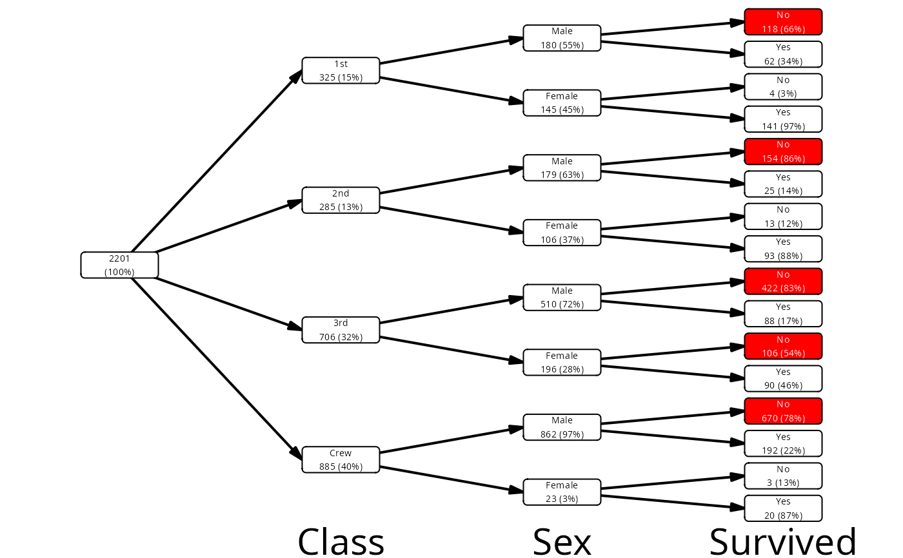
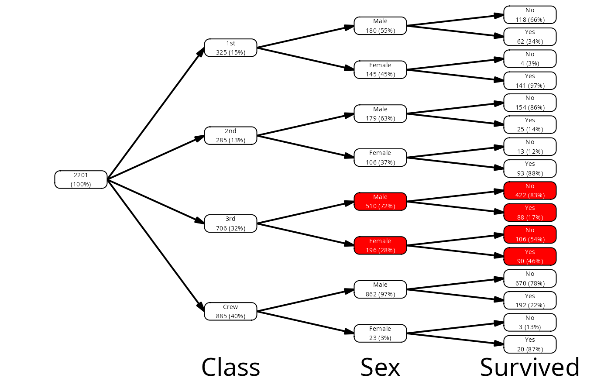
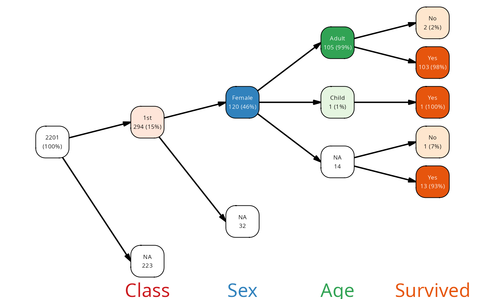
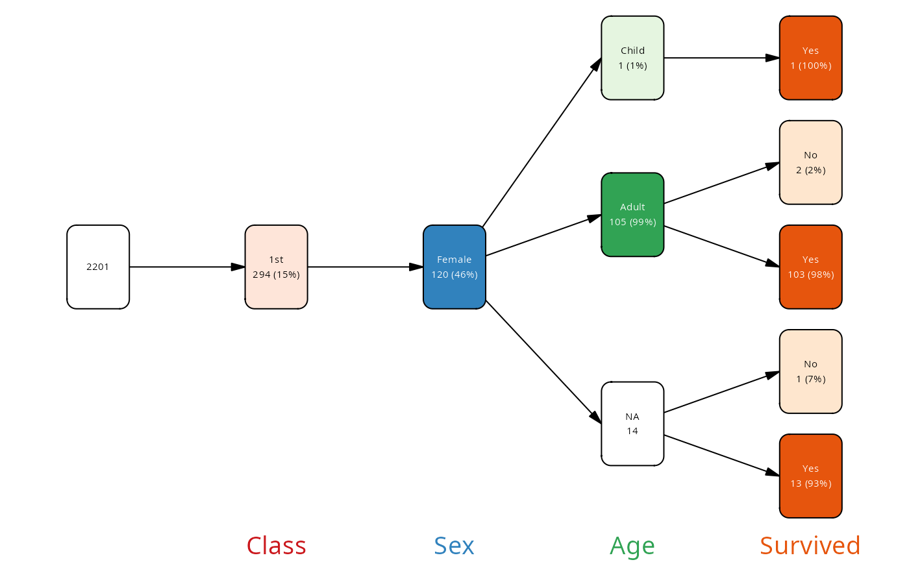

Find nodes and prune a vtree graph
prune.Rdprune() prunes the tree by condition, mark() marks nodes by
condition, retain() prunes everything but the nodes that fullfil a
condition and find_nodes() returns a logical vector for nodes by
condition.
Arguments
- vtree
A vtree graph object.
- condition
A logical expression that defines the pruning condition.
- follow_only
if TRUE, retain the nodes selected by condition, but prune all following nodes.
- mark_only
If TRUE, marks the nodes that satisfy the condition in the node data frame with a new column
markbut does not prune the graph. Useful for debugging. The values of the column arehitfor the nodes that satisfy the condition, otherwisekeepfor the nodes that would be kept, andprunefor the nodes that would be pruned.- keep_na_sisters
If TRUE, then when pruning/keeping nodes, NA nodes which are sisters with a kept node (share the same parent) are also kept.
- keep_follow
If keep is specified, and keep_follow is true, then nodes following the selected node (i.e., its children) are also kept even if they do not fulfill the condition.
Value
retain() and prune() return a pruned vtree object.
find_nodes() returns a logical vector corresponding to the tree nodes
Details
prune() prunes a vtree graph by removing nodes that satisfy a given condition.
The condition is evaluated in the context of the node attributes,
allowing for flexible pruning based on node values.
If a node is pruned, all subsequent nodes in the path are also pruned.
retain() is a convenience function that retains only the nodes that
satisfy the condition and prunes everything else, except for any node
that precedes the selected nodes.
find_nodes() returns a logical vector identifying the nodes which
fullfill a certain condition. With follow_only=TRUE, it returns TRUE
for each node which follows (directly or indirectly) a node which
fullfills the condition.
mark() is the same as find_nodes(), except that the logical vector
is then inserted into the column mark of the node data frame in the
vtree and the vtree is returned. It is a shortcut for prune(condition, mark_only=TRUE).
condition can be any logical vector that refers to either the columns
in the node data frame of the vtree object, or the names of the vtree
variables. For example, you can use node_col to find nodes which
correspond to a certain variable, and then use the variable name to
search for a specific value.
retain vs prune
Note that retain() is not a simple complement of prune(), because if you
use retain to select a node, then if the parent node does not fullfill the
condition it will still be kept. However, if you mark a node for pruning
with prune(), then all subsequent nodes will be pruned, even if they
fullfill the condition.
In the Titanic example, if you prune all nodes where frequency is less than 15%, then the node for adult females from the crew will be pruned, because the frequency of the node Crew:Adult/Sex:Female is below 15% and all subsequent nodes are also pruned. However, if you specify to keep all nodes where frequency is above 15%, then the node Crew:Adult/Sex:Female will be kept despite having a low frequency, because the subsequent nodes – like percentage of survivorship for female crew members – are above 15%.
keep_na_sisters
If the tree was created with valid percentages (.vp=TRUE), then the
percentage and count for a node cannot be used to calculate the
total count for that variable. For example, if we know that in the 1st
Class on the Titanic there were 120 (46%) females (as in the titanicNA
data set), we cannot calculate the total number of passengers in the 1st
class without knowing for how many passengers in the 1st class we lack
the information about their sex. Therefore, by default NA nodes are kept
if the tree was created with .vp = TRUE (see also is_vp()). You can
control this behavior with keep_na_sisters.
Examples
vt <- vtree_from_freqtable(Titanic, Class, Sex, Survived)
# find the node corresponding to the 1st Class
mask <- find_nodes(vt, node_col == "Class" & Class == "1st")
# find nodes with frequencies below 15%
mask <- find_nodes(vt, freq < .15)
# find nodes where the fraction of survivorship was less than 80
mask <- find_nodes(vt, node_col == "Survived" &
node_val == "No" & freq > .2)
# mark these nodes with red color on the plot
vt |> mutate(fill = ifelse(mask, "red", "white")) |> plot()
#> ℹ palette attribute is NULL
#> legend will be black and white

# mark the nodes directly
mark(vt, node_col == "Survived" & node_val == "No" & freq > .2) |>
mutate(fill = ifelse(mark, "red", "white")) |> plot()
#> ℹ palette attribute is NULL
#> legend will be black and white
 # mark all nodes that follow the 3rd Class node
mark(vt, path == "Class:3rd", follow_only=TRUE) |>
mutate(fill = ifelse(mark, "red", "white")) |> plot()
#> ℹ palette attribute is NULL
#> legend will be black and white
# mark all nodes that follow the 3rd Class node
mark(vt, path == "Class:3rd", follow_only=TRUE) |>
mutate(fill = ifelse(mark, "red", "white")) |> plot()
#> ℹ palette attribute is NULL
#> legend will be black and white

# how keep_na_sisters influences the plot
vt <- vtree(titanicNA)
vt |> retain(path == "Class:1st/Sex:Female") |>
plot()

vt |>
retain(path == "Class:1st/Sex:Female",
keep_na_sisters = FALSE) |>
plot()
